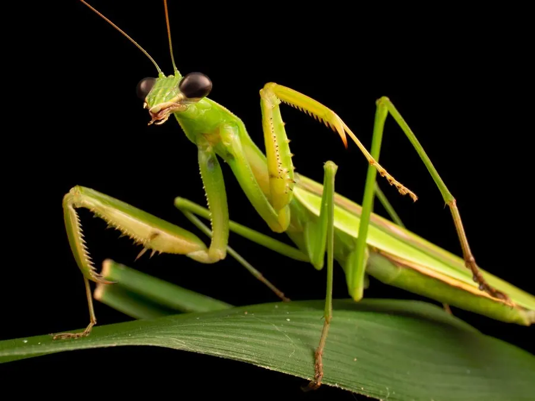

昆虫 · 动物界
中华大刀螳 Tenodera sinensis

中国常见的大型螳螂，前足特化为镰刀状捕捉足，伏击捕食多种昆虫，是著名的天敌昆虫，卵鞘入药称螵蛸。
- 分类
- 门节肢动物门纲昆虫纲目螳螂目科螳螂科属大刀螳属
- 栖息环境
- 草丛、灌丛、农田与园林绿地，多在枝叶间伏击猎物
- 地理分布
- 中国大部分地区、日本和朝鲜半岛，并已引入北美
- 保护级别
- 暂无评估
物种志
中华大刀螳成虫雌性体长约 7–9 cm，雄性略小，体多绿色或褐色，前胸背板细长，前足基节和腿节带刺，特化成镰刀状的捕捉足。头部呈三角形，复眼大，可灵活转动，便于发现猎物。静止时前足收在胸前，姿态像在祈祷。
它是伏击型捕食者，常停在枝叶间等待蛾、蝶、蝗虫、蝇类等经过，再猛然伸出前足夹住猎物。若虫同样捕食小型昆虫，有自相残杀习性，雌螳螂交配后有时会吃掉雄螳螂。雌虫把卵产在泡沫状的卵鞘中，一个卵鞘含卵数十至上百枚，以卵越冬，一年发生一代。中华大刀螳分布在中国大部分地区以及日本、朝鲜半岛，已被引入北美并归化，是农田害虫的重要天敌，卵鞘入中药称螵蛸。
形态与习性
- 食性捕食蝗虫、蛾类、蝇类等，若虫捕食小型昆虫
- 体长雌性约 7–9 cm，雄性约 6–8 cm
- 生活史一年一代，以卵鞘越冬，春季孵化
- 繁殖卵鞘含卵数十至上百枚，雌螳螂有食夫现象
- 生态作用农田害虫天敌，可用于生物防治
- 药用卵鞘入中药，称螵蛸
趣味知识
- 螳螂的复眼在夜间对光敏感，是少数能夜间活动的捕食性昆虫。
- 雌螳螂产卵时分泌泡沫形成卵鞘，硬化后能保护卵安全越冬。
- 中华大刀螳被引入北美后已在当地归化，成为常见螳螂。